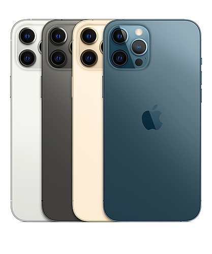
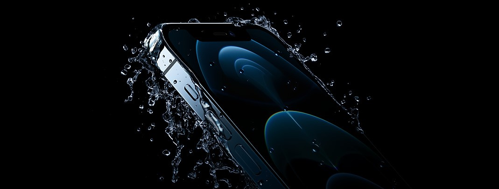
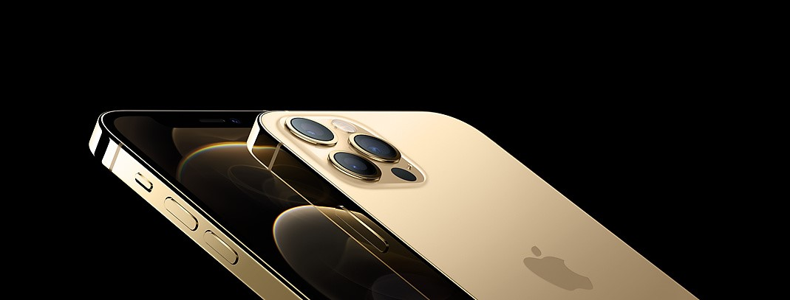

Màn hình:
OLED6.7"Super Retina XDR
Hệ điều hành:
iOS 14
Camera sau:
3 camera 12 MP
Camera trước:
12 MP
Chip:
Apple A14 Bionic
RAM:
6 GB
Bộ nhớ trong:
256-512GB
SIM:
1 Nano SIM & 1 eSIM,
Hỗ trợ 5G
Pin, Sạc:
3687 mAh, 20 W

Cuối cùng sau nhiều ngày tháng trì hoãn, chiếc điện thoại iPhone 12 Pro Max được mong chờ trong suốt thời gian qua cũng đã lộ diện. Đây là sản phẩm smartphone cao cấp nhất của Apple với hàng loạt nâng cấp đáng kể so với thế hệ iPhone trước.
iPhone 12 Pro Max chính thức trở thành chiếc iPhone có màn hình lớn nhất tính tới thời điểm hiện tại. Bạn sẽ được trải nghiệm hình ảnh đã mắt trên màn hình 6,7 inch Super Retina XDR này. Viền màn hình và phần khoét tai thỏ đã được làm gọn hơn để tối ưu thêm không gian hiển thị. Tấm nền của iPhone 12 Pro Max hỗ trợ chuẩn HDR10 với độ sáng tối đa lên tới 1200 nit. Màn hình của máy được bảo vệ bởi kính cường lực Ceremic Shield cho độ bền gấp 4 lần thế hệ trước.
Cầm iPhone 12 Pro Max trên tay chắc chắn sẽ thu hút mọi ánh nhìn nhờ thiết kế cực sang trọng. Phần viền của máy được làm từ vật liệu thép không gỉ sáng bóng, được sơn lên lớp phủ chống xước. Mặt lưng của máy tiếp tục được hoàn thiện nhám giúp tăng cường khả năng cầm nắm mà không phải đánh đổi vẻ ngoài cao cấp. Người dùng sẽ có 4 lựa chọn về màu sắc gồm bạc, xám graphite, vàng và xanh biển sâu. iPhone 12 Pro Max được trang bị chuẩn kháng nước và bụi bẩn IP68.
iPhone 12 Pro Max là chiếc điện thoại đầu tiên của Apple hỗ trợ băng tần mạng 5G. Với thế hệ mạng viễn thông mới, người dùng sẽ được trải nghiệm tốc độ truyền tải internet nhanh “chóng mặt” lên tới 4GB/s. Nhờ đó mà mọi nội dung streaming trực tuyến như nhạc, video HDR hay hoạt động lướt web thông thường đều diễn ra trong nháy mắt. Với tính năng Smart Data, iPhone cũng sẽ tự động chuyển đổi giữa LTE và 5G dựa trên nhu cầu của các ứng dụng để tối ưu hoá lưu lượng data và thời lượng sử dụng pin của thiết bị.

Tiếp tục truyền thống tạo ra những chiếc iPhone với hiệu năng dẫn đầu
thị trường, năm nay Apple đã giới thiệu vi xử lý Apple A14 Bionic, con
chip đi dộng đầu tiên chạy trên tiến trình 5nm. Con chip này đem lại
tốc độ xử lý nhanh hơn 50% so với những vi xử lý khác trên thị trường
và có khả năng hoàn thành 11 tỷ phép tính mỗi giây. Con chip mới cũng
đem lại nhiều tính năng xử lý hình ảnh đỉnh cao như quay video Dolby
Vision, chụp ảnh Smart HDR 3 và Deep Fusion.
Bộ nhớ tối thiếu của iPhone 12 Pro Max đã được nâng lên gấp đôi
thành 512GB, giúp người dùng thoải mái lưu trữ dữ liệu. Thời lượng pin
của iPhone 12 Pro Max cũng thuộc hàng top trong thế giới smartphone.
Chiếc điện thoại này hứa hẹn sẽ đem lại 20 tiếng xem video liên tục
cho người dùng (tương đương với iPhone 11 Pro Max). Bạn chắc chắn sẽ
có một ngày làm việc và giải trí không ngừng nghỉ với chiếc điện thoại
này. iPhone 12 Pro Max cũng hỗ trợ sạc nhanh 18W và sạc không dây
MagSafe 15W vô cùng tiện lợi và nhanh chóng.
iPhone 12 Pro Max sẽ đem lại cho người dùng hệ thống camera chuyên nghiệp hàng đầu thị trường với nhiều nâng cấp đáng giá. Camera chính của máy có giữ nguyên độ phân giải 12MP nhưng có cảm biến lớn hơn, cho kích thước điểm ảnh lên tới 1,7μm. Khẩu độ được nâng lên ƒ/1.6 giúp tăng 22% khả năng thu sáng. Ống kính góc rộng cho góc chụp tới 120o, cho bạn những bức ảnh với nhiều chi tiết và cảnh vật xung quanh. Camera tele trên iPhone 12 Pro Max đã được tăng tiêu cự lên 65mm, cho khả năng zoom quang học 2.5x, đưa bạn đến gần hơn với những vật thể ở xa. Camera của iPhone 12 Pro Max được trang bị tính năng Smat HDR 3, giúp đem lại độ sáng đồng đều cho từng chi tiết, đem lại những bức hình rực rỡ ngay cả trong điều kiện ngược sáng.
Nhà Táo cũng đã giới thiệu tính năng Apple ProRAW, giúp thiết bị thực hiện toàn bộ khả năng nhiếp ảnh điện toán chuyên nghiệp trên định dạng RAW. Điều này giúp những nhiếp ảnh dễ dàng chỉnh sửa hậu kì. Tính năng chụp đêm Night Mode năm nay đã có thể hoạt động trên cả camera góc rộng, camera selfie và trong chế độ quay video. iPhone 12 Pro Max cũng là chiếc điện thoại đầu tiên và duy nhất trên thị trường có thể quay video Dolby Vision 10-bit giúp thu lại tới 1 tỷ màu sắc, cho bạn những thước phim cực đã mắt. Công nghệ chống rung Sensor Shift OIS cũng đem lại sự ổn định chưa từng có cho những video của bạn.
Với những nâng cấp kể trên, dễ hiểu tại sao iPhone 12 Pro Max là chiếc
smartphone được săn đón nhiều nhất trong thời điểm này. Sở hữu iPhone
12 Pro Max, bạn sẽ được trải nghiệm tất cả những tinh hoa mà Apple đã
đặt vào sản phẩm của mình.
Hiện tại, Hoàng Hà Mobile đã trở thành nhà phân phối uỷ quyền
chính thức của Apple tại Việt Nam, hứa hẹn đem lại cho khách hàng
những sản phẩm chất lượng cao và mức giá phải chăng nhất. Để mua
iPhone 12 Pro Max, hãy tới ngay chi nhánh Hoàng Hà Mobile gần nhất
hoặc click đặt hàng để được giao hàng tận tay hoàn toàn miễn phí. Sản
phẩm được bảo hành chính hãng 12 tháng.